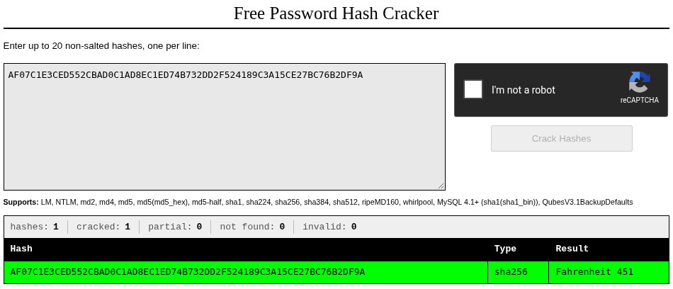

Når rockyou er udtømt, er preimage måske ikke et password overhovedet.
En SHA-256-hash gives sammen med teksten: "Some people just really don't like books. I rather enjoy reading my dictionary, however." Ingen anden kontekst, bare hashen og de to sætninger.
AF07C1E3CED552CBAD0C1AD8EC1ED74B732DD2F524189C3A15CE27BC76B2DF9A
# 64 hex-tegn = SHA-256Standard-angrebet: hashcat -m 1400 mod rockyou.txt
(14.344.391 ord) med regelsæt oveni for at dække varianter (store/små bogstaver,
tal-suffixer, årstal):
hashcat -m 1400 -a 0 hash.txt rockyou.txt -r best66.rule
# Exhausted, intet match (946 mio. kandidater)
hashcat -m 1400 -a 0 hash.txt rockyou.txt -r rockyou-30000.rule
# Exhausted, intet match (430 mia. kandidater, ~76 min)Hele rockyou-keyspace'et er nu afsøgt, med og uden mutationer. Det er et stærkt signal: preimage er sandsynligvis slet ikke et typisk "password"-mønster, rockyou er lækkede adgangskoder, ikke generel tekst.
Opgaveteksten siger selv "I rather enjoy reading my dictionary", altså en ORDBOG, ikke en adgangskode-liste. crackstation.net bruger langt bredere ordbøger end rockyou, inkl. bogtitler og fraser, netop den slags tekst der aldrig ville optræde i en lækket password-dump:

Direkte bekræftelse uden om hashcat helt:
import hashlib
hashlib.sha256(b"Fahrenheit 451").hexdigest()
# af07c1e3ced552cbad0c1ad8ec1ed74b732dd2f524189c3a15ce27bc76b2df9a <-- matchGåden giver mening bagudrettet: "some people really don't like books" er en omskrivning af bogafbrænding, og 451°F er netop temperaturen hvor bogpapir antændes i Ray Bradburys roman Fahrenheit 451, en mere skjult reference end et ligefremt password-tema.
Flag: HKN{Fahrenheit 451}
Bemærk det usædvanlige flag-format: et mellemrum midt i flaget (stort F, mellemrum, "451"),
og at både HKN{}- og DDC{}-præfiks blev accepteret på denne opgave.
Dette er samme lektion som Hasher 2 (brug en ordbog, ikke rockyou), bare mere ekstrem: her må man først udtømme rockyou HELT, inkl. tunge regelsæt, før man er sikker nok på at skifte strategi. Generelt: når en massiv, velkendt ordliste er fuldt afsøgt uden hit, er konklusionen sjældent "prøv en endnu større liste af samme type", men "overvej om søgerummet overhovedet er det rigtige". En opgaves eget sprogvalg (her "dictionary") er ofte et direkte hint til hvilken TYPE søgerum der er korrekt.